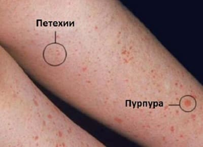
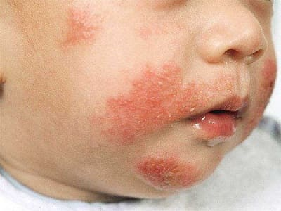
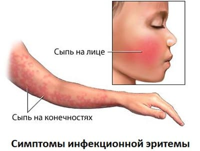
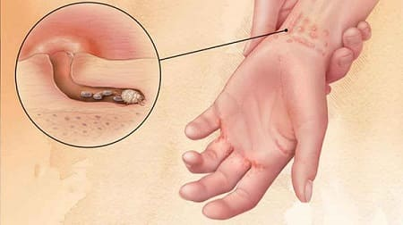
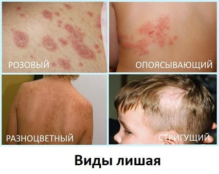

У каждого ребенка в детстве может появляться сыпь. И на самом деле все сыпи в конечном счете безобидны. Самое главное — понять, когда сыпь серьезная и необходимо срочное обследование и лечение. Если вы знаете, что не требуется предпринимать никаких экстренных мер, вы можете, не спеша обследовать сыпь и определить ее причину. Ниже приведено наше руководство по определению и лечению детских сыпей.
КАК РАСПОЗНАТЬ ОПАСНУЮ СЫПЬ
Единственный самый главный тип сыпи, который вы должны уметь распознать, называется петехия или пурпура. Она появляется, когда кровеносные сосуды внутри кожи разрываются и оставляют красные точки размером с острие булавки (петехия) или красные или фиолетовые пятна большего размера (пурпура). Этот тип сыпи важно уметь распознавать, поскольку он может быть вызван серьезной бактериальной инфекцией, которая требует незамедлительного лечения. Необходимо срочное обследование. Главный признак, по которому можно отличить этот вид сыпи от других, при которых появляются красные и фиолетовые точки, заключается в том, что эти высыпания не бледнеют; если вы расположите пальцы по бокам от точки и растянете кожу в противоположных направлениях, точка не побледнеет. Все другие сыпи, от ветряной оспы до потницы, побелеют или поблекнут практически до нормального цвета кожи, когда их растягивают или нажимают на них. Еще одним признаком петехии и пурпуры является то, что высыпания находятся в пределах кожи. Проведя по ним пальцем, вы не почувствуете никаких выпуклостей на коже. При большинстве других видов сыпей точки будут рельефными.
Итак, поскольку вы, возможно, читаете эту страницу из-за того, что у вашего ребенка загадочная сыпь, прервитесь прямо сейчас и убедитесь, что у вашего ребенка не петехия и не пурпура. Сделав это, можете вздохнуть с облегчением и наискосок проглядеть остальную часть этого раздела, чтобы определить, что же на самом деле вызвало сыпь у вашего ребенка. Если вам кажется, что сыпь вашего ребенка не прошла «тест на бледность» и это все же может быть петехия или пурпура, крайне важно обследовать высыпания, как описано ниже.

КОГДА НЕ БЕСПОКОИТЬСЯ ПО ПОВОДУ ПЕТЕХИИ ИЛИ ПУРПУРЫ
В качестве небольшого утешения можем отметить, что иногда этот тип сыпи возникает без особых серьезных на то причин и довольно безопасен. Например, если вашего ребенка неоднократно рвало или у него приступы мучительного кашля, давление в сосудах на лице могло подняться достаточно высоко, чтобы вызвать их небольшие разрывы. Если вы обнаружили эти точки только на лице и больше нигде на теле, то вам, возможно, не о чем беспокоиться. Если ваш ребенок в целом чувствует себя хорошо и у него нет лихорадки, посетите врача, когда у него будут приемные часы.
КОГДА БЕСПОКОИТЬСЯ
Увидев такие точки в любом другом месте на теле, кроме лица (не просто одна крошечная точка, а несколько), звоните своему врачу. Если у вашего ребенка высокая лихорадка, сильная головная боль, он апатичный или слишком раздражительный и у него появились такие высыпания, немедленно отправляйтесь в отделение неотложной помощи. Если ваш ребенок не выглядит очень больным и у него нет лихорадки, вероятность менингита мала и, возможно, пока нет необходимости немедленного обращения в отделение неотложной помощи. При ближайшей возможности посетите врача. Он сделает анализы крови для того, чтобы определить, почему кровеносные сосуды ребенка кровоточат, чтобы можно было сразу же начать необходимое лечение.
РАСПРОСТРАНЕННЫЕ ДЕТСКИЕ СЫПИ
Ниже описаны самые распространенные детские сыпи. Хотя никакие из них не требуют срочного медицинского вмешательства, некоторые надо незамедлительно начинать лечить в домашних условиях.
Крапивница. Это рельефные, зудящие, белые и/или красные пятна или полосы различного размера. Они могут быть маленькими, как ластик от карандаша, и такими большими, как монета в 1 или 2 доллара. Они практически всегда вызываются аллергической реакцией. Крапивница, как правило, появляется неожиданно, чаще всего на туловище (грудь, живот или спина), и быстро распространяется на другие участки тела, включая конечности. Она редко бывает на лице. Крапивница часто пропадает на одном участке и появляется на другом, постоянно перемещаясь и изменяясь на протяжении нескольких часов. Простой способ определить крапивницу — лечить ее с помощью безрецептурных пероральных антигистаминных препаратов. Если пятна начнут проходить или полностью исчезнут, то это точно крапивница.
Экзема. Она является следствием комбинации сухой, чувствительной кожи и аллергической реакции на что-то в рационе или окружающей обстановке. Она часто начинается на внутренней стороне локтей и задней части коленей, но может появиться и на любом другом участке тела в виде шершавых сухих или влажных пятен красного или телесного цвета. Пятен может быть одно или десятки, и они, как правило, сопровождаются довольно сильным зудом.

Обычные сыпи у новорожденных. В течение первых двух месяцев жизни у большинства новорожденных появляется сыпь, называемая себорейным дерматитом. Эти красные припухлость, папулы и пятна появляются обычно на лице и верхней части тела, но могут быть в любом месте. Эти безобидные «детские угри» проходят без лечения, и ваш ребенок будет готов к первой фотосессии к 2 месяцам. |
Неспецифические вирусные сыпи. Существуют десятки вирусов, которые могут поразить ребенка и вызвать сыпь.
Некоторые из них довольно распространены и легко распознаваемы, например, ветряная оспа, краснуха и инфекционная эритема, которые обсуждаются ниже. Тем не менее большинство других вирусных сыпей выглядят одинаково, и, как правило, их нельзя отличить друг от друга. К счастью, поскольку они все безопасны и не требуют лечения, не всегда есть необходимость в точном диагнозе. Достаточно просто определить, когда у ребенка неспецифическая вирусная сыпь. Вот как ее распознать:
Большинство вирусных заболеваний, сопровождаемых сыпью, являются источником инфицирования, начиная за один день до начала заболевания и вплоть до одного дня после спадания лихорадки. Сыпь может держаться около недели, но опасности распространения инфекции нет, когда ребенок снова будет чувствовать себя хорошо.
Специфические вирусные сыпи. Ниже описаны некоторые распространенные и узнаваемые вирусные сыпи, которые встречаются у детей.
Ветряная оспа. Эту сыпь легче всего распознать. Она начинается с появления на туловище нескольких красных пятнышек, которые выглядят как укусы насекомых. В течение первого дня появляется еще больше точек. На второй день первичные элементы станут маленькими волдырями, наполненными прозрачной жидкостью (в отличие от укусов насекомых, которые становятся больше, но образуют папулы, а не волдыри). Еще больше красных пятен появится на второй день. На третий день вы увидите три разных вида элементов сыпи: красные точки, распространяющиеся на лицо и конечности, маленькие волдыри, которые когда-то были красными пятнами (правильнее говорить папулами), и, наконец, корочки, образующиеся после вскрытия и опорожнения волдырей. Эти ежедневные изменения делают ветряную оспу легкоузнаваемой. Не спешите обращаться к врачу в первый же день, чтобы он поставил точный диагноз. Если у вашего ребенка лихорадка и несколько зудящих красных шишек, оставьте его дома, поскольку он, возможно, заразен. На второй или третий день станет ясно, ветрянка у него или нет.
Инфекционная эритема. Эта сыпь вызывается парвовирусом. Она характеризуется яркими красными щеками, которые выглядят так, будто ребенка ударили по щеке. Через 1—2 дня сыпь на лице исчезает и появляется неспецифическая вирусная сыпь (описанная выше), иногда сопровождаемая лихорадкой, насморком, кашлем и общими болями в теле. Когда сыпь на лице пройдет, заболевание нельзя будет отличить от других вирусных заболеваний. От этого заболевания не существует лечения, и оно пройдет через несколько дней без каких-либо проблем. Обратите внимание, что у беременных женщин, находящихся в первом триместре беременности и имеющих этот вирус, могут возникнуть осложнения с плодом. Свяжитесь с акушеркой.

Розеола. Это, возможно, единственная самая распространенная причина лихорадки и сыпи в младенчестве и до 3 лет. Заболевание, вызываемое вирусом герпеса (не тем, который передается половым путем или орально), начинается примерно с трехдневной высокой лихорадки и не имеет других симптомов (кроме плохого самочувствия из-за лихорадки). Как раз, когда родители и врачи начинают беспокоиться, лихорадка спадает и появляется неспецифическая вирусная сыпь. Именно тогда можно поставить диагноз, исходя не из внешнего вида сыпи, а из времени ее появления по отношении к лихорадке. Этот вирус пройдет без какого-либо особого лечения. Единственное, что остается делать, — снижать температуру и принимать меры предосторожности.
Импетиго. Это бактериальная инфекция кожи. Она проявляется в виде красных папул, которые увеличиваются и покрываются корочкой, через которую выделяется гной. Сыпь обычно появляется вокруг рта и носа, но может быть и на любом другом участке тела.
Климатический гипергидроз (потница). Эта неприглядная, но безобидная сыпь множество раз случается в жизни каждого младенца и малыша. Климатический гипергидроз проявляется в виде множества крошечных красных припухлостей вокруг шеи и верхней части туловища, обычно после особенно жаркого дня или сильного потения. При этой проблеме могут помочь простые меры по охлаждению. В жаркую погоду это может быть просто ежедневным явлением.
Летние сыпи. В летнее время сочетание жары, пота, солнцезащитных лосьонов, хлорки в бассейне, песка, травы и прочего, с чем ребенок контактирует, когда жарко и солнечно, может вызывать неспецифическую красную бугристую сыпь. Ее можно диагностировать, просто исключив все остальные причины сыпи. На самом деле это сочетание потницы и контактного дерматита. Если она не доставляет беспокойства вашему ребенку, просто оставьте ее в покое и подождите, пока закончится лето. Если она вызывает зуд или раздражение, безрецептурные противозудные кремы могут помочь уменьшить дискомфорт.
Контактный дерматит. Эта красная, зудящая, бугристая и иногда сочащаяся сыпь может появиться вследствие контакта кожи с раздражителем, например, сумахом ядовитым и/или ядоносным. Сыпь, как правило, появляется спустя несколько часов или дней после контакта. Когда ребенок чешется, раздражающее вещество может распространиться по расчесам. |
Зуд пловца и сыпь загорающего. Это происходит при купании в море: морские существа (например, некоторые виды медуз) причиняют множество мелких ожогов, которые превращаются в зудящие участки кожи. Существует два типа сыпи: одна развивается только в местах, закрытых купальником (потому что туда попадают маленькие живые существа); вторая — только на открытых участках кожи. Лечение включает применение пероральных антигистаминных препаратов и местное нанесение мази с гидрокортизоном (возможно, понадобятся рецептурные препараты).
Чесотка. Считается, что это самая зудящая сыпь, известная человечеству. Она развивается из-за крошечного клеща (микроскопическое насекомое), который проникает в кожу и вызывает сильный зуд и расчесы. Расчесы способствуют расселению виновника, и образуется полоса или линия бугристой зудящей красной сыпи.

Скарлатина (сыпь при стрептококковой ангине). Эта сыпь вызывается реакцией организма на стрептококк, когда он вызывает ангину. Она проявляется в виде множества крошечных, красных припухлостей по всему туловищу, на ощупь напоминая тонкую наждачную бумагу. Наличие этой сыпи не означает, что стрептококковая ангина более серьезная, чем такая же, но без сыпи. На самом деле сыпь облегчает диагностирование стрептококковой ангины.
Сыпь на лице от слюнотечения. Хотя эта сыпь безобидна, она может быть довольно упряма и беспокоит родителей, поскольку от нее страдает внешний вид ребенка. Ее можно отличить от импетиго на лице по отсутствию корочки и гноя. Можно свести эту сыпь к минимуму при помощи ланолиновой мази (например, Ланзинол), продающейся в аптеке. Эта сыпь может многократно появляться и проходить в первые годы жизни. |
Укусы насекомых. Эти зудящие участки могут быть различных форм и размеров. Они, как правило, диагностируются по двум показателям: обычно их немного за один раз, и они имеют обыкновение увеличиваться в размере через несколько дней, при этом в центре различима точка от укуса.
Стригущий лишай. Эта сыпь вызывается грибком. Она проявляется в виде красного выпуклого кольца, в центре которого находится вполне нормальная кожа. Сыпь может быть разных размеров и увеличивается, если ее не лечить. Как правило, появляется только одно пятно, но оно может расширяться и иногда вызывает зуд. Единственный способ отличить стригущий лишай от экземы — по нормальной коже в центре кольца; участки, пораженные экземой, часто грубые и выпуклые по всему своему протяжению.
Сыпи на волосистой части головы. Различные виды высыпаний на волосистой части головы возникают на протяжении всего детства.
Пятнистый лишай. Это маленькие белые, красные или коричневые круглые участки, которые появляются по всему телу. Они могут вызывать зуд.

Аутоиммунные заболевания. Они вызываются реакцией иммунной системы организма человека на его собственные ткани и органы. Точная причина этого явления неизвестна, и различные аутоиммунные заболевания слишком сложные, чтобы перечислять их здесь. Тем не менее необходимо подчеркнуть, что любая хроническая, красная, не зудящая сыпь, которая сопровождается повторяющимся необъяснимыми лихорадкой, болями в суставах и мышцах, отеками рук, ног, лица или суставов, частыми болезнями, болями в груди или необычной утомляемостью, может указывать на аутоиммунное заболевание.
ЛЕЧЕНИЕ
Иногда даже самый наблюдательный родитель или врач не может определить, какая именно это сыпь. Не помешает попробовать несколько разных методов лечения, чтобы проверить, какой лучше поможет. Это позволит вашему ребенку избавиться от беспокоящей сыпи, причем тип ее может так и остаться неизвестен. Попробуйте эти средства:
Если сыпь ухудшается при лечении, сразу же прекратите его и обратитесь к врачу (если только вы не только что вышли от него, и он, как и вы, в замешательстве). В случае необходимости попробуйте обратиться к дерматологу. |
Вы можете попробовать использовать два или три крема одновременно, нанося каждый на разные участки сыпи, чтобы проверить, что действует лучше.
Здоровье ребенка от докторов Сирс / Сирс У. и др.